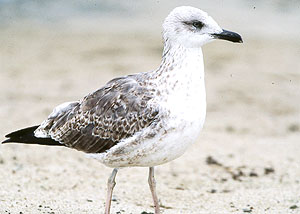
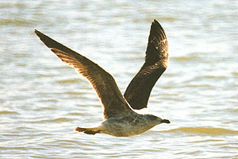

| These photographs accompany records that have been recently submitted to the committee. This record
has been ACCEPTED.  Lesser Black-backed Gull Larus fuscus 16 Nov 97, Lake Cunningham, San Jose, SCL 1997-178 © 1997 Ronald M. Saldino Back to CBRC Rare Bird Photos |
|  Lesser Black-backed Gull Larus fuscus 31 Oct 97, Lake Cunningham, San Jose, SCL 1997-178 © 1997 Michael M. Rogers Back to CBRC Rare Bird Photos |